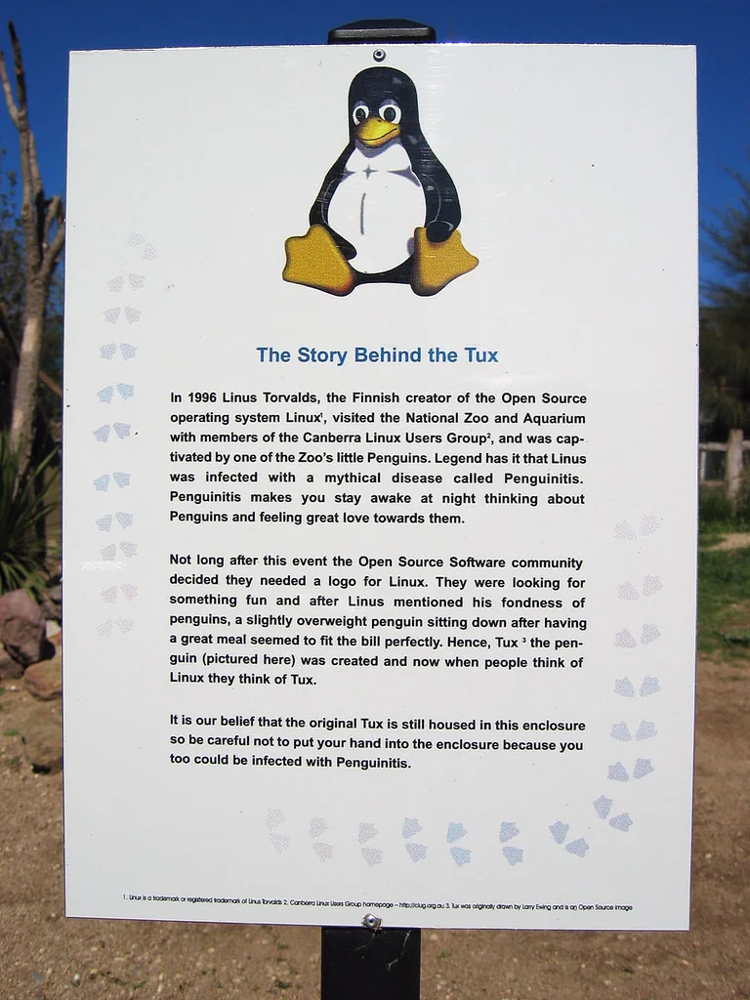

映画「メッセージ」主演の Amy Adams とかっこいいデスク
映画「メッセージ」主演の Amy Adams と監督 Denis Villeneuve
映画「メッセージ」主演の Amy Adams と助演の Jeremy Renner（一番好きな俳優）
映画「メッセージ」主演の Amy Adams と助演の Jeremy Renner（一番好きな俳優），コンピュータの前で
映画「メッセージ」主演の Amy Adams，大自然の中
映画「メッセージ」主演の Amy Adams と助演の Jeremy Renner（一番好きな俳優）
Linux カーネルのマスコット Tux（わたしが一番気に入っているバージョン）

The Story Behind the Tux
The most standard Tux
NVIDIA, FUCK YOU!
Faces of Open Source
ぼくはヴィジョナリーじゃない
 ほんとうに世界を変えてきたのは Steve Jobs でも Elon Musk でもない。Linus Torvalds だ！
ほんとうに世界を変えてきたのは Steve Jobs でも Elon Musk でもない。Linus Torvalds だ！
Linus: "Social media is a disease."
Linux の強み
映画「インターステラー」の Murph と Cooper
映画「インターステラー」の Murph とCooper。「絶対に帰ってくる」
映画「インターステラー」のとうもろこし畑のシーン
My life is a disaster zone.
映画「ヒート」の Al Pacino，もっともかっこいい俳優の一人
There's a flip side to that coin.